C语言
课程概要
本章课程需要具备汇编语言基础，若无汇编语言基础是无法去理解课程中所讲的一些知识点和技术细节的；同时也表示本课程是以汇编语言来理解C语言，透过本质理解高级语言。
关于本节课的环境：VC6，VC6是一个集成开发环境，使用VC6而不去使用较新的VS是因为VS会自己优化代码，而我们想要直接了解真正的本质就应该选择无添加的VC6。
C语言的汇编表示&函数的定义与调用
在了解C语言的汇编表示之前，我们要弄清楚C、C++、VC6、VS之间的关系，C和C++都属于编程语言，VC6、VS属于集成开发环境。
我们创建第一个C程序的顺序为（以下键盘快捷方式基于VC6）：
1.创建项目（选择Win32 Console Application）
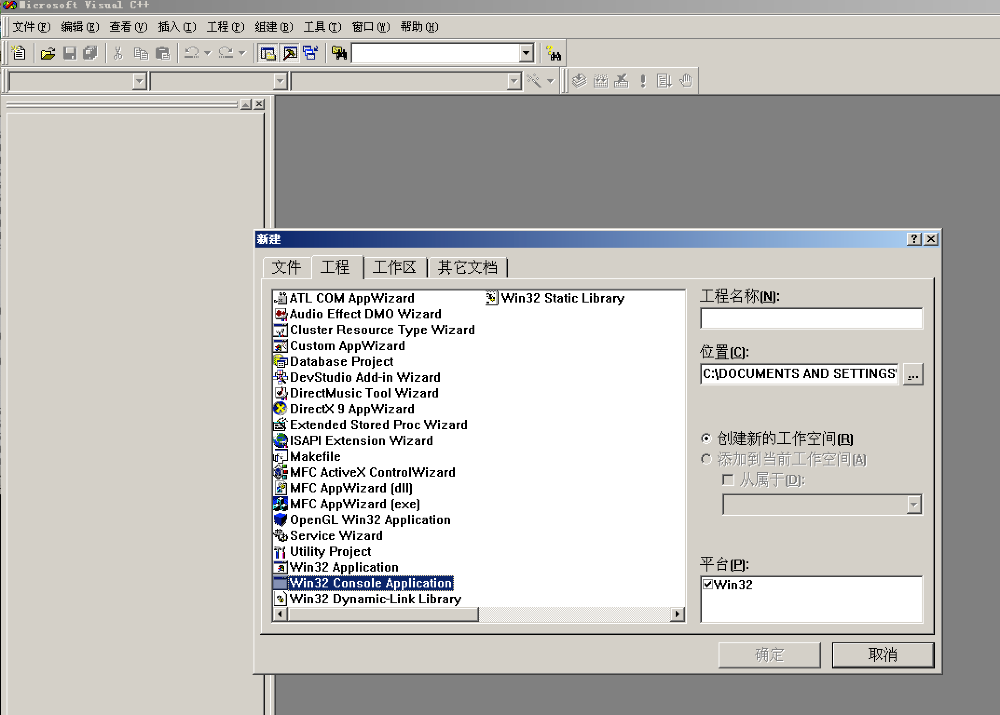
2.创建文件（Source File）
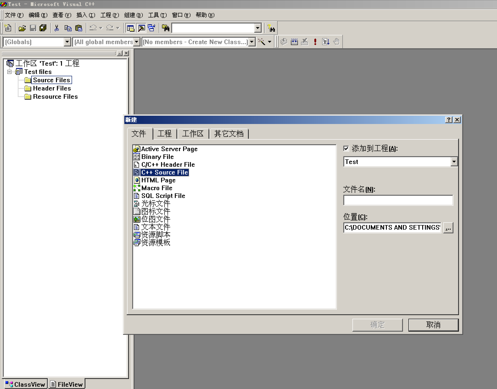
3.编写入口程序
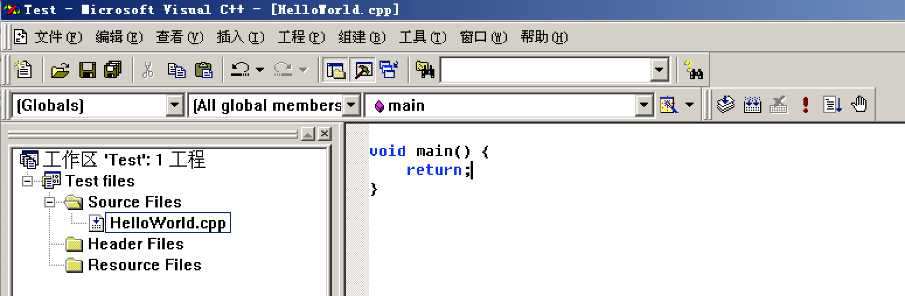
34.构建（F7）

5.运行（F5）
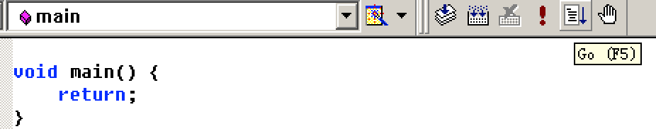
如下代码就是入口函数：
void main() { return;}在C语言中约定俗成的入口函数名称为main()，函数的格式是这样的：
返回类型 函数名(参数列表) { 函数体; return 返回类型对应的数据; // 执行结束}定义一个函数，其返回类型、函数名是必须要有的，参数列表是可有可无的，定义函数在函数体的最后一定需要使用return返回对应数据类型的数据。
关于函数名、参数名的命名也是有要求的，如下所示：
只能以字母、数字、下划线组成；且第一个字母必须是字母或下划线。
命名严格区分大小写
不能使用C语言的关键字（例如：void、return之类）
定义好函数之后，我们需要知道如何调用函数（使用函数），假设现在我们需要做一个加减法的程序，可以这样写：
int plus(int x, int y) { return x+y;}void main() { plus(1,2); return;}如上所示，调用函数的格式为：函数名(传入参数);，这是C语言调用函数的方法，我们之前也了解过汇编如何调用函数：
push 0x1push 0x2call address那么C语言其调用函数的本质是什么呢？我们可以来具体看看其编译后的反汇编代码。
单击plus(1,2);那一行，按一下F9，下一个断点，然后F7构建，F5运行。
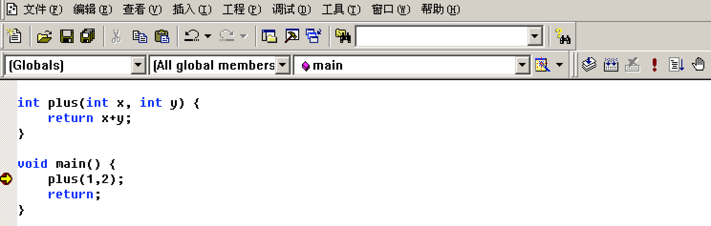
再右击这行代码，选择如下图所示的按钮，来查看反汇编代码：
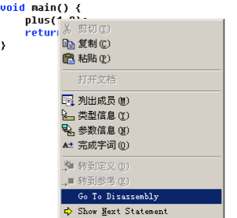
通过查看反汇编代码我们发现C语言调用函数实际上跟我们之前所学的汇编是一样的：
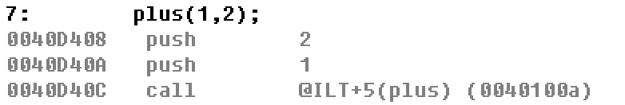
但需要注意的是，这里我们看见的反汇编代码是Debug版本，也就是方便我们调试的，而实际上程序编译应该是以Release版本，两个版本对应的汇编代码也是不一样的，另外VC6在展示反汇编代码的时，适当的做了一些优化，也就是便于阅读理解，例如上图所示的函数调用的汇编call指令，实际上就是call 0040100a。
总结：函数名本质上就是编译器给内存地址起的名字。
以下汇编代码需要熟悉了解（plus函数的汇编代码实现）：
1:2: int plus(int x, int y) {00401010 push ebp00401011 mov ebp,esp00401013 sub esp,40h00401016 push ebx00401017 push esi00401018 push edi00401019 lea edi,[ebp-40h]0040101C mov ecx,10h00401021 mov eax,0CCCCCCCCh00401026 rep stos dword ptr [edi]3: return x+y;00401028 mov eax,dword ptr [ebp+8]0040102B add eax,dword ptr [ebp+0Ch]4: }0040102E pop edi0040102F pop esi00401030 pop ebx00401031 mov esp,ebp00401033 pop ebp00401034 retVC6的快捷键：
下断点：F9
运行：F5
构建：F7
编译：Ctrl+F7
构建执行：Ctrl + F5
执行下一条：F10
执行下一条（步入内部）：F11
停止调试：Shift + F5
参数传递与返回值
在上一节中我们了解到了函数，函数的本质就是一堆指令，我们可以重复调用；函数的定义在上节中我们也已经了解了，我们举一个函数的例子：
int plus(int x, int y) { return x+y;}在这个函数中，其参数列表有x和y，它们我们可以理解为是一个占位符，当我们想要调用函数的时候，可以使用真正的数据替换这两个占位符。（注：占位符也需要指定其数据大小，也就是数据宽度；不可以直接写作x, y）
该函数plus前面有一个int，这就表示plus函数返回类型为int类型，而int类型也是表示数据宽度，其为4个字节，除此之外还有short（2个字节）、char（1个字节）。
我们想要了解程序的本质，就需要追踪每一行到底是如何运作的，如下代码我们来进行跟踪分析plus函数是如何运行的：
int plus(int x, int y) { return x+y;}void main() { plus(1,2); return;}老规矩我们基于VC6的环境下，在调用plus函数那一行下断点（F9），然后（F7）构建，（F5）运行，右键进入汇编界面。

在这里，我们需要观察堆栈来观察程序的本质，这里可以借助Excel工具画堆栈图便于理解，我们可以选中一列然后将其边框都填上：

记住堆栈在执行前后的变化，画堆栈图要记住两个寄存器，一个是栈顶（ESP），一个是栈底（EBP）。
在我们代码（调用plus）函数还没开始执行时候要先记住这两个寄存器的值：
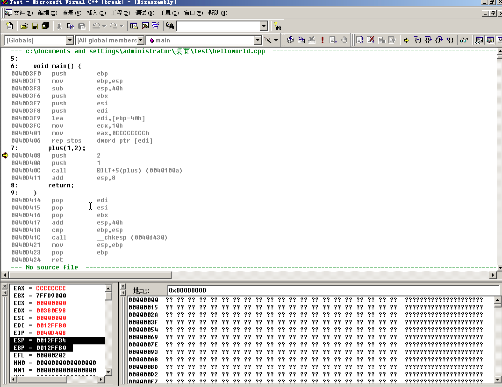
将两个值填入我们的Excel表格中，再将其用颜色标记一下即可：
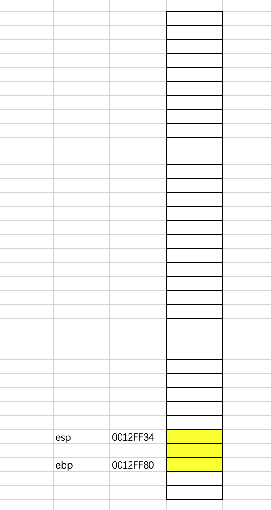
接下来我们就可以按照程序执行顺序来进行跟进了，我们来看一下汇编代码：
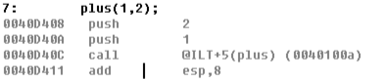
可以看见从右到左，依次压入我们调用函数传入的参数，然后再使用call指令去调用函数，在这里我们可以使用F10跟进执行。
连续压入堆栈2个数据，堆栈也会根据数据宽度提升，此时我们要在堆栈图中根据变化进行修改：
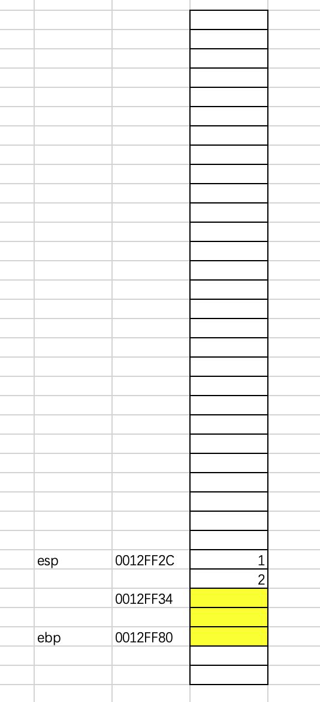
而我们想要跟进call指令需要使用F11跟进，就如同学习汇编时「使用DTDebug 跟进CALL指令不能使用F8要是用F7」。
而跟进call指令之后，我们的堆栈也会发生变化，call指令下一行执行的地址会压入堆栈，栈顶也随之提升，需要注意的是在VC6中F11跟进会先过渡到一个jmp指令，然后再通过其跳到真正的函数执行地址。
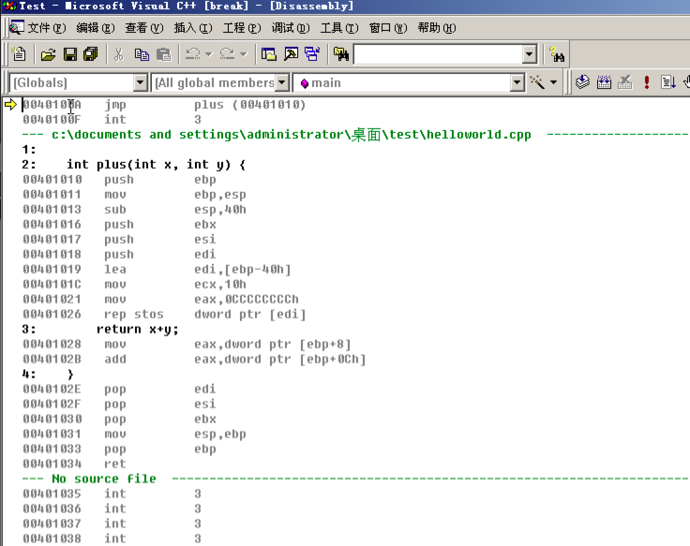


接着我们再来看一下跟进的函数对应的汇编代码：

在这里看到汇编代码，我们就应该知道它要干什么了，就要通过ebp进行寻址，关于这一块，在学习汇编时也有了解到，所以还是建议各位在学习本课程时候先去学习汇编。
我们先来看一下return之前的汇编代码：首先压入ebp到堆栈中，然后提升栈底（ebp）到栈顶（esp）的位置，再将栈顶（esp）提升0x40（十进制则表示64，堆栈图中也就是16个格子，这一块区域我们称之为缓冲区），后将ebx、esi、edi分别压入堆栈（此处是保存现场，为了函数执行完后恢复），而后lea指令是将ebp-0x40的地址（也就是esp提升0x40后的地址）给到edi，再将0x10（十进制则表示16）给到ecx（这里ecx是循环计数器），接着将0xCCCCCCCC给到eax，然后rep stosd（简写）就是将eax的值储存到edi指定的内存地址，默认情况下标志寄存器的 DF位为0，所以edi的值也就随循环每次递增4（dword为4字节所以是4）在这里实际上就是将哪一块缓冲区填充CC，此时堆栈图变成如下所示：

为什么缓冲区填充的数据是0xCCCCCCCC？因为CC可以起到断点的作用，填充CC就是以防程序使用缓冲区时用过了，如果用过了可以及时断点；这一块包含调试器的一些知识，这里不过多阐述。
return的汇编代码则很简单：通过ebp寻址获得传递的参数，ebp+8则是1，ebp+0xC则是2，最终结果在eax中。
当函数执行完成之后我们需要将之前压入堆栈的寄存器还原，分别pop edi → esi → ebp（堆栈遵循先入后出），而后就是恢复堆栈到函数执行之前的样子，将esp下降到ebp的位置，而后再pop ebp，还原栈底，最后ret也就是将当前栈顶的值赋给eip，然后让栈顶加4（注：这里之前使用过的数据都不会清空，如果程序运行时敏感数据存储在堆栈内则会被黑客恶意利用），但此时结束了吗？并没有，我们F10继续跟进：

可以清晰的看见esp的值加0x8，此时才是遵循了堆栈平衡，还原了堆栈在函数执行前的样子。

最后，我们来总结一下：
在C语言中参数传递是通过堆栈的，传递的顺序是从右到左
在C语言中函数返回值是存储在寄存器eax中
变量
在编写程序的时候，经常需要存储数据，前面学习汇编时了解到了，数据可以存在寄存器中，或者内存中。在C语言中，存储数据要存在变量中，变量就是一个容器（通常就是内存）；变量类型决定变量内存宽度，变量名就是内存地址的编号（别名）。
声明变量的格式：
变量类型 变量名;
注：变量类型用来说明数据宽度是多大
例：int 4字节、short 2字节、char 1字节
变量的命名规范与函数名、参数名一样：
只能以字母、数字、下划线组成；且第一个字母必须是字母或下划线。
命名严格区分大小写
不能使用C语言的关键字（例如：void、return之类）
在C语言中，变量有两类：全局变量、局部变量。
全局变量：
在函数体外定义，并且作用于全局；
在程序编译完成后，内存地址和宽度就已经确定下来了，变量名就是内存地址的别名；
只要程序启动，全局变量就已经存在，如若变量在一开始声明时没有赋值，则初始值为0；
如果不重新编译，全局变量的内存地址永远都不会变；
全局变量中的值任何程序都可以改，其最终存储的就是最后一次修改的值。
在这里我们简单的来定义一个全局变量：
int a = 123;int plus() { return a+1;}void main() { plus(); return;}我们跟进看一下反汇编代码：
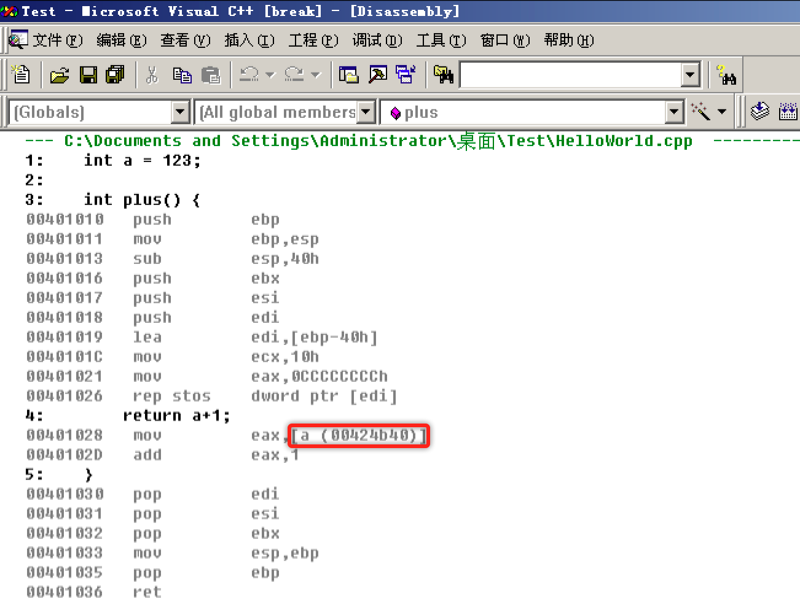
全局变量a实际上就是一个内存地址，接着来看其存储的内容（0x7B转为十进制就是123）：
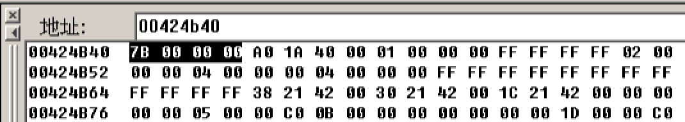
局部变量：
在函数体内定义，作用于当前所在函数；
局部变量的内存是在堆栈中分配的，程序执行时才分配，不执行则不会分配，我们无法预知程序何时执行，也就意味着我们无法知道局部变量的内存地址；
不确定局部变量的内存地址，所以其也就只能作用于当前函数内部，其他函数不能使用。
int plus() { int a = 123; return a+1;}void main() { plus(); return;}最后结论：
全局变量是可以没有初始值直接使用的，因为系统默认给其0为初始值；
局部变量在使用前必须要赋值，因为系统不会初始化它，而只有在其赋值时才会分配内存。
变量与参数的内存布局
我们已经掌握了函数、函数调用、变量、参数、返回值等相关的一些概念，本借口我们从内存的角度来分析参数在内存中的位置、局部变量在内存中的位置、返回值是如何返回和使用的。
以下示例代码，就是一个调用函数（x+y），结果给了局部变量z，然后返回z：
int plus(int x, int y) { int z = x + y; return z;}void main() { plus(1,2); return;}在这里，我们还是下断点一步一步跟进，然后画堆栈图分析即可，如下是堆栈图及其对应汇编代码（这不是整个函数执行完后的堆栈图）：
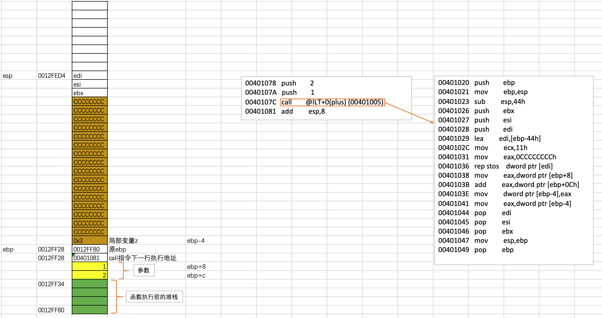
如上图所示，我们可以清晰的看见参数在内存中的位置就是ebp+8、ebp+c...以此类推；局部变量则位于我们之前所说的缓冲区，也就是ebp-4、ebp-8...以此类推，这也就是为什么局部变量使用前需赋初值，不然里面是垃圾数据（CC）。
接下来我们需要知道返回值是如何返回和使用的，在C语言中使用返回值就需要一个容器来存储这个返回值，这个容器我们也称之为变量，如下示例代码：
int plus(int x, int y) { int z = x + y; return z;}void main() { int a; a = plus(1,2); return;}我们来看下汇编代码：
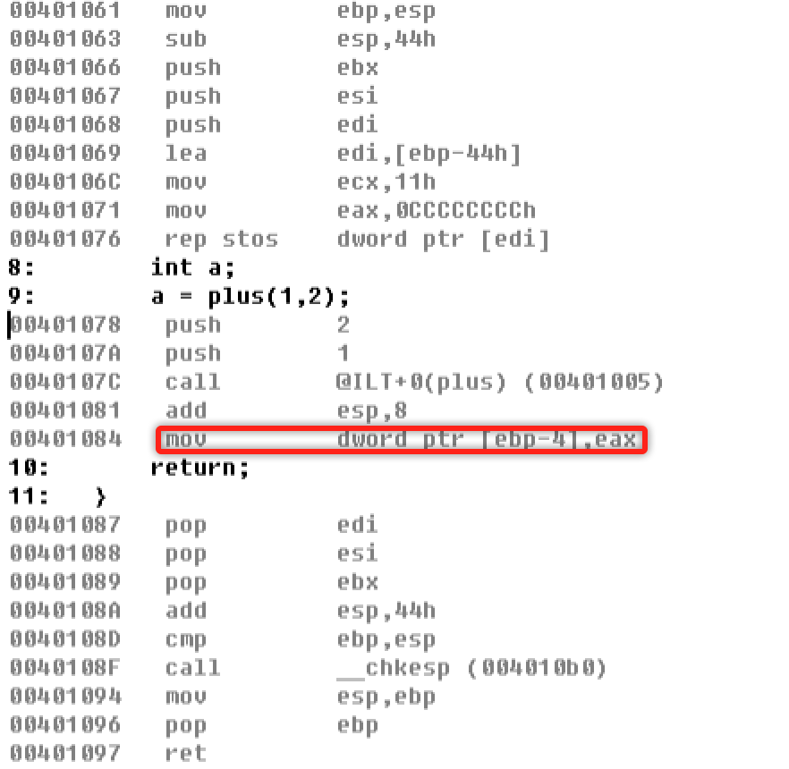
可以看见这里会将eax放入到当前函数的缓冲区（main函数，ebp-4），也就是将返回值存到当前函数的缓冲区内。
函数嵌套调用的内存布局
函数嵌套调用实际上就是函数中调用另外一个函数，以下为示例代码：
int plus1(int x, int y) { return x+y;}int plus(int x, int y, int z) { int r; r = plus1(x,y); return r+z;}void main() { int a; a = plus(1,2,3); return;}老规矩我们还是在plus函数那下断点跟踪画堆栈图，如下是堆栈图：

在调用完plus1函数后，plus函数会有这样一个汇编代码：
00401094 add esp,44h00401097 cmp ebp,esp00401099 call __chkesp (004010b0)需要注意的是这个代码只有Debug版本才会有，而在Release版本中堆栈的布局与这是不一样的。
这段代码的意思就是对比esp和ebp是否一样，而我们知道堆栈在使用完成之后要恢复成员来的样子（堆栈平衡），所以在add指令之后ebp与esp应该是一样的，而后的call指令实际上就是调用了一个函数（__chkesp），这个函数就是用来检查你的堆栈是否平衡的。
至此，我们就了解了函数嵌套调用的内存布局，但实际上我们在之前就已经了解过了，因为main本身也是一个函数，main调用了plus也属于函数嵌套调用，只不过我们画堆栈图是在调用plus之前画的，所以忽略了这一点。
整数类型
在之前的课程中我们提到了变量，变量就是一种容器，我们可以存储数据在里面，里面的数据也可以被我们修改；但是这个容器能存储多少数据，存储什么样格式的数据就取决于变量类型（数据类型）。
在C语言中变量类型有这几种：
基本类型：整数、浮点
构造类型：数组、结构体、共用体（联合）
指针类型
空类型：void
这节课我们先来学习以下整数类型：
|
名称 |
数据宽度 |
数据范围 |
|
char |
8BIT = 1字节 |
0 - 0xFF |
|
short |
16BIT = 2字节 |
0 - 0xFFFF |
|
int |
32BIT = 4字节 |
0 - 0xFFFFFFFF |
|
long |
32BIT = 4字节 |
0 - 0xFFFFFFFF |
注：int在16位计算机中与short宽度一样，在32位及以上的计算机中与long相同。
如果我们存储的数据宽度比变量的数据宽度大就会出现数据溢出，如下示例代码：
char x = 0x100;这种情况下，数据是如何存储的呢？我们还可以来看一下汇编代码：

可以看见这里在汇编中直接存储的是0（十六进制），因为这里的数据宽度是1个字节，也就是8位二进制，其二进制则为0000 0000，100我们可以转为二进制：0001 0000 0000
由此得出一个结论：当数据存储超出其数据宽度造成数据溢出时，存储数据舍弃高位，存储低位。以上例子可能不明显，可以看如下例子：

整数的存储格式如下：
char x = 1; // 0000 0001char x = -1; // 1111 1111至于为什么这样存储，还需要去回顾一下「原码、反码、补码」的相关知识。
在之前的汇编学习中，我们了解到有符号数和无符号数，同样在C语言中，也可以表示有符号数与无符号数，在C语言中不添加如下关键词，默认就是有符号数：
signed char x = -1; // 有符号数unsigned char a = -1; // 无符号数在什么时候去使用有符号、无符号呢？
有符号：涉及负数的领域，如炒股
无符号：无负数的领域，如年龄
如上代码，我们可以看下反汇编：

这时候，可能会有人疑惑，为什么定义了变量a为无符号数，存储-1的内容还是0xFF呢？这是因为在编译器中，不管你是如何定义这个数的，只要看见-1，那么一定会以其补码形式存储。
有符号数与无符号数存储数据是没有区别的，只有在扩展与比较时才会存在区别。
如下示例代码，定义一个char类型的变量，再赋值给一个int类型的变量：
char x = -1; // 0xFF 1111 1111int y = x;因为在C语言中不添加如下关键词，默认就是有符号数，所以这里就是两个有符号数的赋值，变量x给到y，y的值就是0xFFFFFFFF，这是为什么？int类型代表4个字节，也就是32位二进制数：0000 0000 0000 0000 0000 0000 0000 0000，在这里x为1111 1111，那么二进制数为：二进制数：0000 0000 0000 0000 0000 0000 1111 1111，但由于这是一个有符号数，所以其余位为符号位，也就是1，最终二进制数为：1111 1111 1111 1111 1111 1111 1111 1111，也就是0xFFFFFFFF。
无符号数则不需要如此：
unsigned char x = -1; // 0xFF 1111 1111int y = x;这里最后变量y的值则为255，也就是0000 0000 0000 0000 0000 0000 1111 1111。
在比较时候也存在区别，例如：
int a = 1; // 0x1int b = -1; // 0xFF这里是有符号数比较a和b，a确实是大于b的，但无符号数不一样：
unsigned int a = 1; // 0x1 1unsigned int b = -1; // 0xFF 255这里在比较，则b大于a。
浮点类型
浮点类型分为这几类：
|
名称 |
数据宽度 |
|
float |
32BIT = 4字节 |
|
double |
32BIT = 8字节 |
|
long double |
32BIT = 8字节（在某些平台的编译器中可能是16个字节） |
建议赋值方式：
float a = 1.23F;double b = 2.34;long double c = 2.34L;我们在日常使用中最常用的就是float、double类型；会有人好奇，为什么在这里要在数据最后加上F或L？就以float举例，如果不加上F，编译器默认会认为这个值是double，然后再转换赋值给float。
float和double在存储的方式上都遵从IEEE编码规范：
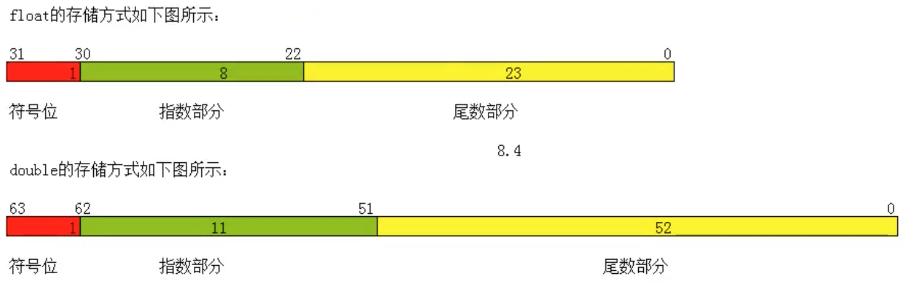
我们主要了解一下float类型的存储格式即可，其他类型举一反三都可以进行推演。
这里我们举例说明8.25转成浮点存储，整数部分8不断的除以2，直到结果为0，整除不包含小数点，所以最后的1/2结果为0，有余数则为1。
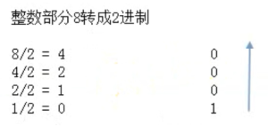
从下往上读，由此可以得出8的二进制为1000，我们还可以来算一下9的二进制：
9/2 = 4 1
4/2 = 2 0
2/2 = 1 0
1/2 = 0 1
得出9的二进制为1001，得出结论：所有的整数一定可以完整的转换为二进制。
8.25转成浮点存储，小数部分这样计算：
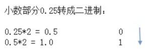
小数部分0.25不断的乘以2，直到结果小数点为0，例如：1.0，而如果大于1.0则二进制位也为1，其余都是0，这里我们以0.4为例子：

0.8*2=1.6，1.6的1拿走则表示二进制位为1，然后再乘以2，以此类推...但是这里我们发现这里就进入了循环状态，一直都是0110，永远无法得到结果小数点为0的情况。
由此得出结论：用二进制描述小数，不可能做到完全精确，就像用十进制描述1/3一样。
将一个float型转化为内存存储格式的步骤：
先将这个实数的绝对值化为二进制格式
将这个二进制格式的实数的小数点左移或者右移N位，直到小数点移动到第一个有效数字的右边
从小数点右边第一位开始数出二十三位数字放入第22到第0位
如果实数是正的，则第31位放入“0”，否则放入 “1”
如果n是左移得到的，说明指数是正的，第30位放入“1”，如果n是右移得到的或n=0，则第30位放入“0”
如果n是左移得到的，则n减去1后化为二进制，并在左边加“0”补足七位，放入第29到第23位
如果n是右移得到的或n=0,则将n化为二进制后在左边加“0”补足七位，再各位求反，再放入第29到第23位
8.25 -> 100.01 -> 1.00001 * 2的三次方(指数是3)
科学计数法
10 = 1 * 10一次方 指数:1
100 = 1 * 10的二次方 指数:2
1000 = 1 * 10的三次方 指数:3
填充表格(flot)
符号位(1) 指数部分(8) 尾数部分(23)
0 10000010 000 0100 0000 0000 0000 0000
16进制表示: 0x4104 0000
尾数部分：经过第一步转换后 8.25等于 1.00001 * 2的三次方(指数是3)
尾数直接从前往后放所以尾数是：000 0100 0000 0000 0000 0000
指数部分：
首位表示小数点移动方向
向左移动则为1，向右为0
指数部分简单方法:
不论左移还是右移。一律把指数 +127 然后取2进制
左移了三次，指数为3,3的二进制是11，但是这里要减去1
所以指数部分为 1000 0010
浮点类型的精度：
float和double的精度是由尾数的位数来决定的；
float : 2^23 = 8388608 一共7位，这意味着最多能有7位有效数字；
double : 2^52 = 4503599627370496 一共16位，这意味着最多能有16位有效数字。
字符与字符串
在之前的课程中我们了解到变量的定义决定两个事情，第一是决定存储的数据宽度，第二是决定了存储的数据格式，那么我们来看下下面的代码：
int a = 123; // 变量x，数据宽度为4个字节，里面存储的是补码（在计算机系统中，数值一律用补码来存储）int float b = 123.4F; // IEEE编码（浮点）int c = 'A'; // 那这个存储的是啥？我们在代码中写了变量c，但是它最终存储进去的是啥呢？我们看下反汇编：

在这里'A'存储的时候变成了0x41，这是为什么？因为它是一个字符，这里需要注意在变量定义赋值时，赋值字符需要加上单引号。
在内存中所有东西最终都会变成0和1，A对应0x41，那么可以大胆猜测一下B就是对应0x42，当我们使用字符存储到内存时，字符自然是没办法存储到内存中的，这时候就有了一个字符对应的表：ASCII表（美国标准信息交换代码）
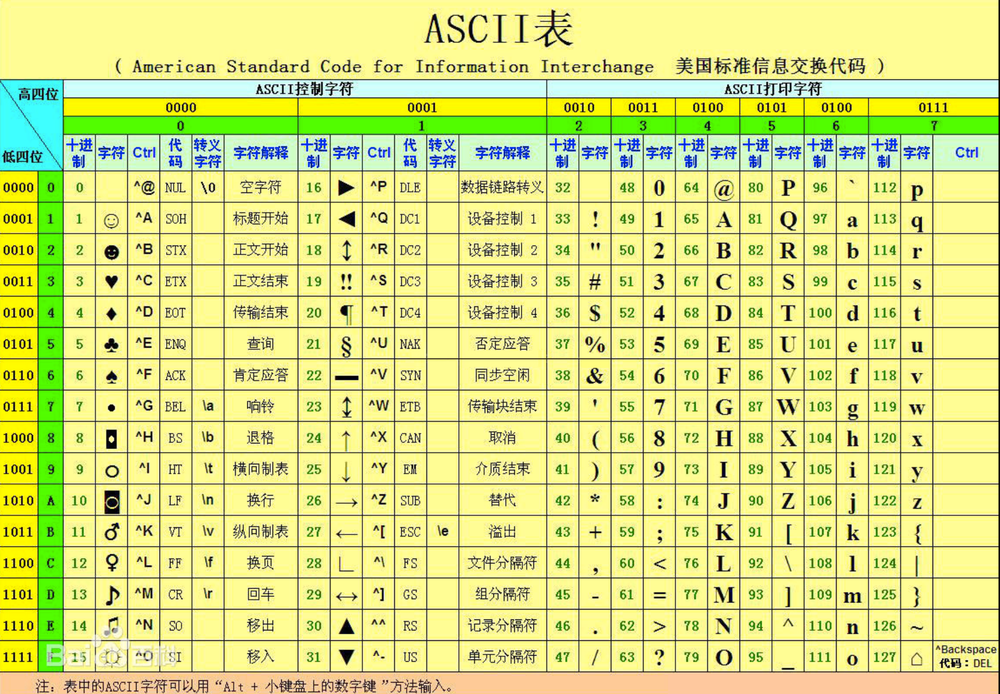
这张表有128个符号，都是比较常用的，那也就是说在我们赋值A给变量时，编译器会去这张表中寻找大写的A，如上图所示A对应10进制为65，转为16进制就是0x41。
值得注意的是在这张表中最多也就是占用一个字节的宽度，所以我们完全没有必要使用int来存储字符，可以选择char，例如：char a = 'A';
在很多书中会描述char就是用来存储字符的，这是一个错误的说法，数据的存储是由使用者决定的而不是计算机。
C语言会自带很多函数提供我们使用，我们想要在控制台中输出一个字符，可以使用putchar这个函数：
putchar(65);putchar('A');如上代码就是输出一个字符A，这样我们就了解了这个函数的运行本质：将对应数从ASCII表中查出画在(打印)控制台上；需要注意该函数一次只能打印一个字符。
除了这个函数外还有一个打印输出的函数：printf，它就可以一次性打印多个字符。
#include <stdio.h>void main(){ printf("Hello World!\n"); int x = 0xFFFFFFFF; printf("%d %u %x\n",x,x,x); // -1 4294967295 ffffffff float f = 3.1415F; printf("%6.2f\n",f); // 3.14}使用printf函数需要在代码开头写#include <stdio.h>，三个printf分别表示输出字符串、整数、浮点数。
有心之人可能会发现在使用printf函数时，有好几个百分号的东西，这就叫做占位符，一共分为如下这几种：
%d 有符号数形式打印
%u 无符号形式打印
%x 16进制形式打印
%{x.y}f 打印浮点数 x标志打印总长度 y 代表小数点后长度
看过示例代码之后，我们就知道了字符串本质上就是一堆字符连续串在一块，观察一下反汇编代码：
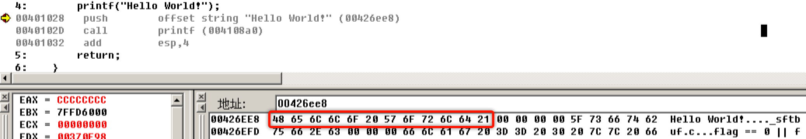
这时候就存在一个问题，printf为什么会知道打印完最后一个感叹号之后就不打印了呢？这是因为在这一串字符串后存在着一个00，当printf看见之后就会停止打印了，也就是说字符串的结束标志在内存中是00。
我们想使用char类型来存储字符串，就需要用到数组，例如：
char buffer[20] = "Hello World!";printf("%s\n",buffer);这就表示buffer可以存储20个字符，%s是占位符，表示以字符串形式打印，关于数组的细节后面的课程中会学习到，这里了解一下即可。
中文字符
在之前了解到ASCII码表中，我们并没有发现存在中文，那么如何在计算机中存储中文？这时候我们需要了解一个新的表：拓展ASCII码表 (EASCII)
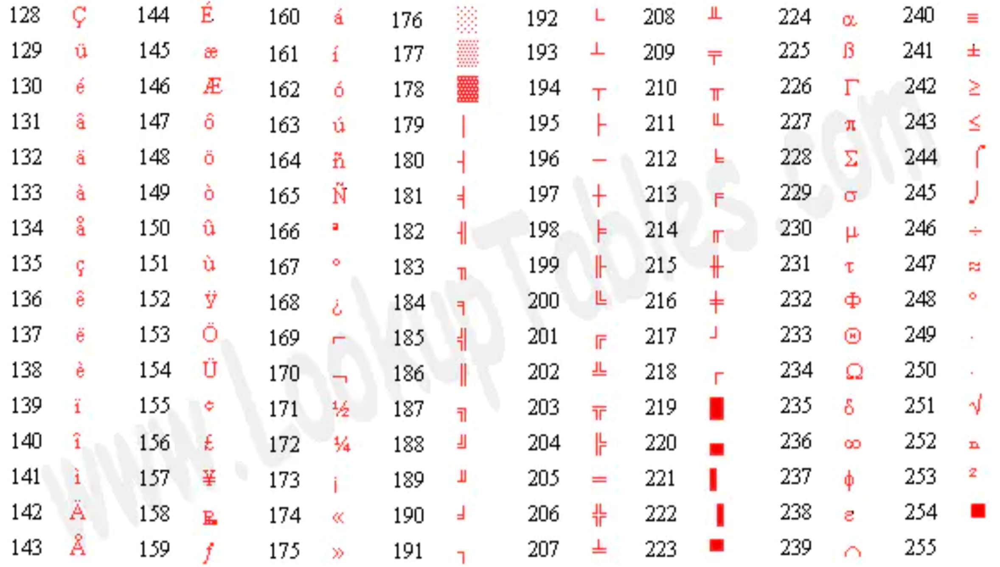
该表十进制值从128到255，但是这些也没办法满足我们中文的需求，所以天朝专家把那些127号后的奇异符号们 (即EASCII)取消掉，规定：一个小于127的字符意义与原来相同，但是两个大于127的字符连在一起时，就表示一个汉字，这样我们就可以组合出大约7000多个简体汉字了。
在这些编码里，连在ASCII里本来就有的数字、标点、字母都统统编了两个字节长的编码，这就是常说的”全角“字符，而原来在127号以下的那些就叫”半角“字符了，上述编码规则就是GB2312或GB2312-80。
GB2312或GB2312-80，两种编码可能使用相同的数字代表两个不同的符号，或者使用相同的数字代表不同的符号，这种编码方式有很大的弊端，当此种编码方式的数据在其他国家使用的时候，如果其他国家使用类似的编码规则，那么数据就会失去原本的意义。
而前辈们早就发现了这种情况，因此Unicode编码就是为了解决这个问题才出现的。
在C语言中写入中文与其他字符串没区别，但我们了解过GB2312或GB2312-80编码规则后，就要知道一个中文代表2个字节：
char buffer[20] = "中国";printf("%s\n",buffer);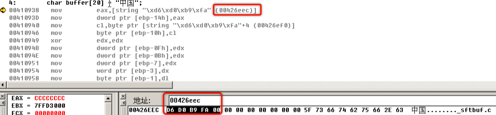
运算符与表达式
什么是运算符？什么是表达式？运算符：加减乘除、大于小于等于、赋值，表达式则是由运算符和变量组成，如下代码示例，从x+y开始都是表达式：
int x,y;x = 12;y = 23;x+y;x-y;x<y;x=y;x==y;如果x和y类型不同，最终结果按照这个顺序进行结果类型转换：char => short => int => float => double；我们可以举例说明：
void main(){ char x = 1; short y = 2; int z = x + y; return;}对应反编码代码为：
00410938 mov byte ptr [ebp-4],10041093C mov word ptr [ebp-8],offset main+20h (00410940)00410942 movsx eax,byte ptr [ebp-4]00410946 movsx ecx,word ptr [ebp-8]0041094A add eax,ecx0041094C mov dword ptr [ebp-0Ch],eax通过汇编代码我们明显可以看出其结果类型的转换。另外需要注意的是：表达式不论怎么复杂，最终只有一个结果。
首先我们来了解一下一些常用的运算符。
算数运算符
|
加 |
减 |
乘 |
除 |
取余 |
自加 |
自减 |
|
+ |
- |
* |
/ |
% |
++ |
-- |
加减乘除、取余都很简单，我们要了解一下自加、自减的用法：
int i = 1;++i;i++;--i;i--;如上就是自加、自减的用法，注意自加、自减的都是1，但其符号为什么可以在变量前或变量后？既然可以这样，其二者区别是什么？我们可以来看一下反汇编代码：

通过反汇编代码我们看不出来其存在什么差别，我们可以借助printf函数来查看区别：
int i = 1;printf("%d \n", i++);printf("%d \n", ++i);运行一下来看看效果：
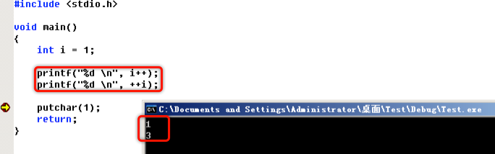
可以看见第一个输出了1，第二个输出了3，那么我们可以暂时认为：自加、自减符号在前则自加、自减完返回，符号在前则先返回当前值，然后再自加、自减；具体的，我们来看一下反汇编代码便可得知：

如上图反汇编代码便可说明我们的猜测是正确的。
关系运算符
|
小于 |
小于等于 |
大于 |
大于等于 |
等于 |
不等于 |
|
< |
<= |
> |
>= |
== |
!= |
示例代码：
int i;i = 1;int a;a = 2;i<a;a>i;i<=a;a>=i;...注意：
关系运算符的值只能是0或1
关系运算符的值为真时，结果值都为1
关系运算符的值为假时，结果值都为0
逻辑运算符
|
非 |
逻辑与 |
逻辑或 |
|
! |
&& |
|| |
示例代码：
int a = 0;int b = 1;int c = !a;a && b;a<b && b>a;注意：
&& 和 ||，使用时左右两边的结果相与、相或，结果最终只有一个。
位运算符
|
左移 |
右移 |
非 |
或 |
异或 |
与 |
|
<< |
>> |
~ |
| |
^ |
& |
位运算在汇编的学习中有提到，这里不过多赘述。
赋值运算符
|
赋值 |
|
= |
条件运算符
条件运算符又称为三元运算符，由问号、分号组成，示例代码如下：
int a;a = 1>2 ? 1 : 0;我们看下反汇编，变量a最终的值是什么：
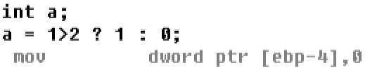
最终值为0，那么可以得出这样一个结论：1>2为表达式，表达式成立则执行问号后面的内容，不成立则执行冒号后面的内容。
分支语句
大家都知道在C语言当中，代码就是按照入口函数体内从上到下的顺序开始执行的，我们想要控制执行的顺序可以使用分支语句、循环语句进行控制，本节课我们就来学习一下分支语句。
最简单的分支语句就是：if，示例代码如下：
int a = 1;int b = 2;if (a < b) { printf(1);} else if (a > b) { printf(2);} else { printf(3);}这段代码的意思就是进入if语句，如果a小于b则打印一个1，如果a大于b则打印一个2，如果前两2个表达式都不成立则打印一个3；在这里我们简单来看一下反汇编代码，看看它如何实现的：
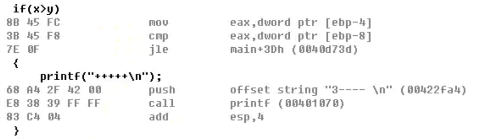
如上反汇编代码可以看的出来，虽然我们C语言写的是x>y，但是jle这个指令实际意义是当小于等于则跳转到0040d73d这个执行地址，我们没有必要去记住C语言对应的反汇编代码的结构，也不需要去记住，因为实际环境很有可能不是这样实现的，只要了解一个大概即可。
注意：分支语句中可以嵌套分支语句，具体实现的功能看使用者。
Switch语句
Switch语句也是分支语句的一种，其语法如下：
switch(表达式){ case 常量表达式1: 语句; break; case 常量表达式: 语句; break; case 常量表达式: 语句; break; ...... default: 语句; break;}需要注意如下几点：
表达式结束不能是浮点数
case后的常量值不能一样
case后的值必须是常量
break非常重要，当执行到一个分支后，如果没有break就会继续向下执行，遇到break才会跳出switch语句
default语句与位置无关，但是当default写在其他条件的前面时。如果没有break就会向下继续匹配执行
switch语句与if..else语句的区别：
switch语句只能进行等值判断（仅能支持常量表达式），而if..else可以进行区间判断（表达式、常量...都可以）
switch语句的执行效率远远高于if..else，在分支条件比较多的情况下，这种趋势愈发明显
Switch语句为什么高效
之前说到switch语句的执行效率远远高于if..else，这是为什么？我们可以写一段代码通过反汇编来查看其在底层的具体实现：
int x = 3;switch(x){ case 1: printf("A \n"); break; case 2: printf("B \n"); break; case 3: printf("C \n"); break; case 4: printf("D \n"); break; default: printf("default \n"); break;}其反汇编代码为：

如上反汇编代码我们可以看出switch在一开始就直接将变量x与3进行比较，ja指令则表示大于则跳转，但这变量x明显等于3，所以将值赋予edx，最后jmp跳到堆栈地址2*4+40d896（40d896+8），也就是0x40D89E对应的值：
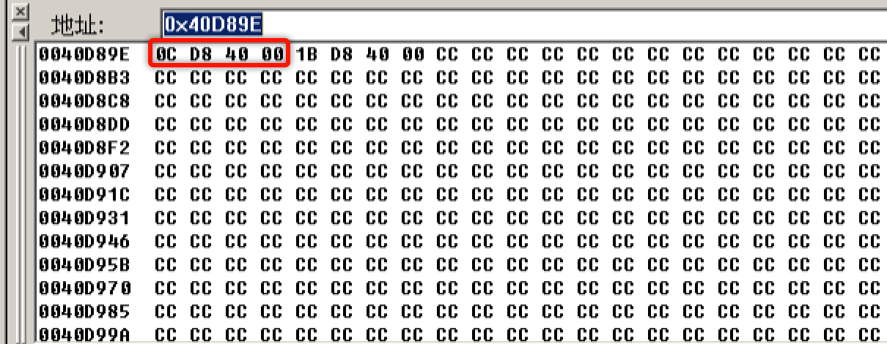
最终跳转到0x0040d80c，打印出了C。
那么我们再使用if...else来实现相同功能：
int x = 3;if (x == 1) { printf("A \n");} else if (x == 2) { printf("B \n");} else if (x == 3) { printf("C \n");} else if (x == 4) { printf("D \n");} else { printf("default \n");}其反汇编代码为：

可以看见其会一行一行的执行，而不像switch语句一样，直接可以跳转到对应的地址。
通过观察堆栈，我们可以发现switch的高明之处：

其将case分支的执行地址都存入到了堆栈中，而后使用算法去寻找到对应要执行的地址（堆栈存储的地址），这套算法我们可以这样理解：
1.堆栈中会存在一个执行地址的内存表，其顺序是按照case后的常量大小排序的，最大的常量所在的分支执行地址最先压入表中；如下图所示我将代码顺序打乱后还是如此：

2.根据内存表存储顺序，直接将传入的值减去1，然后*4（这里也是数据宽度4字节）+最后压入的堆栈地址。
了解完算法原理之后，我们需要了解一个概念：大表和小表；当生成的函数跳转地址表，每个成员有4个字节的时，我们称之为大表。
注意：
在case分支小于等于3个、case最大值和最小值差大于等于255时不存在大小表
在case分支大于3个并且大表项空隙小于等于6个时只有大表没有小表
在case分支大于3个且大表项空隙大于6个且case最大最小差值小于255时存在大表和小表
最后：在一般情况下，我们通常会去使用if语句而不是switch，因为if语句在编程时更加得心应手，所以我们可以暂且忽视效率而去选择更加便利的编写方式。
循环语句
在C语言中如何实现让某些语句按照一定的条件重复执行呢？比如：打印0-N的值，这里可以先使用goto语句：
#include <stdio.h>#include <windows.h>void MyPrint(int x){ int i = 0;B: printf("%d\n",i); i++; if(i<=x) goto B; return;}void main(){ MyPrint(1); return;}调用MyPrint函数，传入1，即可打印0-1的值，使用goto需要定义标签，例如如上代码B就是一个标签，则代表当前的执行地址，goto则跳转到改标签对应的执行地址开始执行，在里面加入if进行判断即可实现循环效果。
除此之外我们可以使用while语句实现：
#include <stdio.h>#include <windows.h>void MyPrint(int x){ int i = 0; while(i<=x) { printf("%d\n",i); i++; } return;}void main(){ MyPrint(100); return;}使用while语句要注意表达式中的变量要自增自减，来实现循环结束的效果，不然会出现死循环的情况。
循环语句有这几种：
while 循环
do...while 循环
for 循环
while 循环
while 语句的语法格式：
while(表达式) 语句;while(表达式){ 语句; 语句;}值得注意的是：这里的表达式最终结果只要是非0，都会进入循环，而表达式也不具备强制性，可以是任何形式，但需要一个最终结果给到循环语句即可：

while语句就是当表达式为非0时执行循环体内的语句，使用不当则会造成死循环，例如：
#include <stdio.h>void main(){ int a = 10; int i = 0; while(i<a){ printf("%d \n", i); } return;}如上代码，我们的需求是输出0-10的数字，但由于这里变量i没有变化，导致表达式结果是永真，固会进入死循环，一直输出0：

这里的根本原因就是变量i没有随着单次循环结束而去自增，我们可以在循环体内使用自增i++解决这一问题。
循环语句不具备特殊性，我们也可以在循环语句内嵌套分支语句，例如打印1-N之间所有的偶数：
while(i<=a){ if(i%2==0) { printf("%d \n",i) } i++;}当然除了嵌套分支语句也可以嵌套循环语句，具体怎么玩还是看你具体需求，例如我这段代码：
#include <stdio.h>void main(){ int a = 10; int i = 0; int j = 0; while(i<=a) { while(j<=a) { if(j==i) { break; } printf("%d \n",j); j++; } i++; } return;}当i<=a进入第一层while循环，j<=i进入第二层while循环，在这里进入第二层循环时实际上如果没有break，则会输出1遍0-10的数字，但实际上因为我们添加了break所以到最后只会输出0-9的数字：
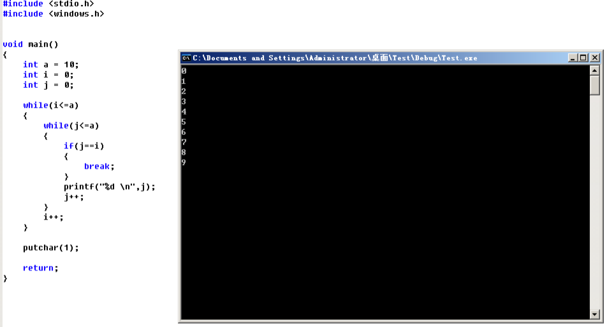
所以除了在switch中可以使用到break，可以在循环语句中使用到break，简单来说它在这里就是跳出一层循环。
除了break外，我们再来学习一个语句：continue，它的作用就是中断当前循环，直接进行下一次循环，这里我们使用打印偶数的例子改造一下变成打印奇数：
while(i<=a){ if(i%2==0) { i++; continue; } printf("%d \n", i); i++;}
do...while 循环
do...while 语句的语法格式：
do{
语句;
}while(表达式);
该循环语句又一个特点就是，即使表达式为0（不成立），也会执行依次循环体内的语句，举例说明：
do{ printf("test");}while(1==2);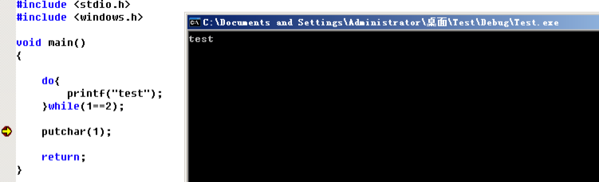
for 循环
for 语句的语法格式：
for(表达式1;表达式2;表达式3){ 语句; // 需要执行的代码4}for循环语句的执行顺序是1243 → 243 → 243...循环结束直至表达式2不成立为止。
我们之前也说到表达式是没有限制的，最终你只需要给一个结果到循环语句即可（决定循环语句是否循环执行的是表达式2，所以在这最终只需要将结果给到表达式2，其余可以不需要），所以for循环语句我们可以这样写：
#include <stdio.h>void T1(){ printf("T1 \n");}int T2(){ printf("T2 \n"); return 0;}void T3(){ printf("T3 \n");}void T4(){ printf("T4 \n");}void main(){ for(T1();T2();T3()) { T4(); } return;}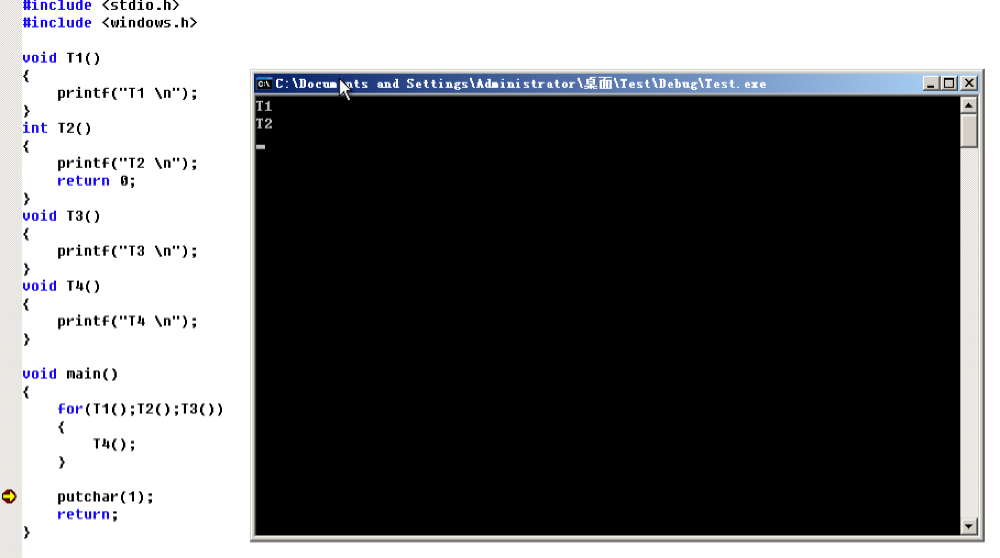
另外值得注意的是，for语句中的表达式是可以省略的：
for(;;){ printf("默认成立\n");}for(;-1;){ printf("不是0就成立\n");}for(;0;){ printf("不成立\n");}除了这个以外表达式1和表达式3可以使用逗号分隔，写入多个语句：
int i;int j;int z;for(i=0,j=0,z=0;i<10;i++,j++,z++){ printf("%d %d %d \n",i,j,z);}循环语句的反汇编
如下图是各个循环语句的反汇编代码：

但从汇编来看我们可以看得出do...while循环语句效率是最高的，但是在日常使用来说大部分会选择使用for与while，do...while出现的较少，还是跟之前我们说的一样，这一点空间可以忽视不管，for语句是最方便书写的，也就是我们可以用空间换编写效率。
数组
数组是C语言中非常重要的一个概念，学习C语言主要就是两个知识点：数组、指针，学好这两个，那么你的C语言一定也会很好。
什么是数组？或者说什么情况下我们需要使用数组，比如说我们需要定义一个人的年龄，我们可以定义一个变量来表示，但是如果我们需要定义三个人的年龄呢？那就需要三个变量来表示，这样很复杂，那么我们是否可以使用一个变量来存储三个人的年龄呢？这时候我们就需要使用数组来定义。
数组的定义格式如下：
数据类型 变量名[常量];
在方括号中我们只能选择使用常量，而不可以选择变量，这是因为在声明的时候编译器需要提前知道数组的长度，然后才会去分配对应大小的内存；那么也就说明此处的常量是用来表示数组可存储的个数。
这里我们以之前的例子，定义一个数组来表示：张三、李四、王五的年龄：
int age[3] = {20,18,39};除该方式外，我们还可以使用如下这种方式定义：
int age[] = {20,18,39};我们可以简单看下反汇编，观察数组在汇编中是如何体现的：
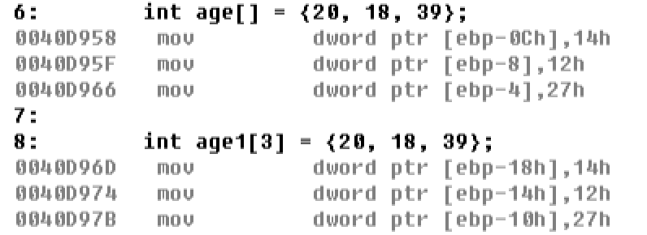
通过反汇编，我们可以看到数组就是整体连续存储进入堆栈中，从左到右依次进入。
那么数组在内存中是如何分配的呢？在之前我们学习过很多数据类型，在这里我们以char类型举例：
可以看见char类型在分配内存空间时，都是以4字节空间分配的，这是因为在32位操作系统中，char类型分配的空间与int类型是一样的。
这个概念实际上就是本机宽度，本机是32位操作系统也就是4字节，在32位操作系统中处理4字节数据时速度最快，这也就出现了需要字节对齐（4字节）的情况。
这里我们再来看下char、short、int类型的数组的空间具体是如何分配的：
char a[10]; // char占用一个字节，需要10个字节，但是因为4字节对齐，所以分配的就是12个字节short b[10]; // short占用两个字节，需要20个字节，20个字节正好符合4字节对齐，所以分配的就是20个字节int c[10]; // int占用4个字节，需要40个字节，40个字节正好符合4字节对齐，所以分配的就是40个字节接下来我们学习一下如何存入、读取数组的数据（方括号[]内由0开始）：
int age[3] = {1,2,3};// 读取int a = age[0];int b = age[1];// 赋值（存入）age[1] = 6;// 注意：在使用数组时，方括号[]中的内容可以使用表达式，而并非强制要求为常量。思考在数组数据读时候，可以越界读取使用么？如果可以结果是什么？我们可以做个小实验：
int arr[10];arr[10] = 100;如上代码我们来运行则会出现这种错误：
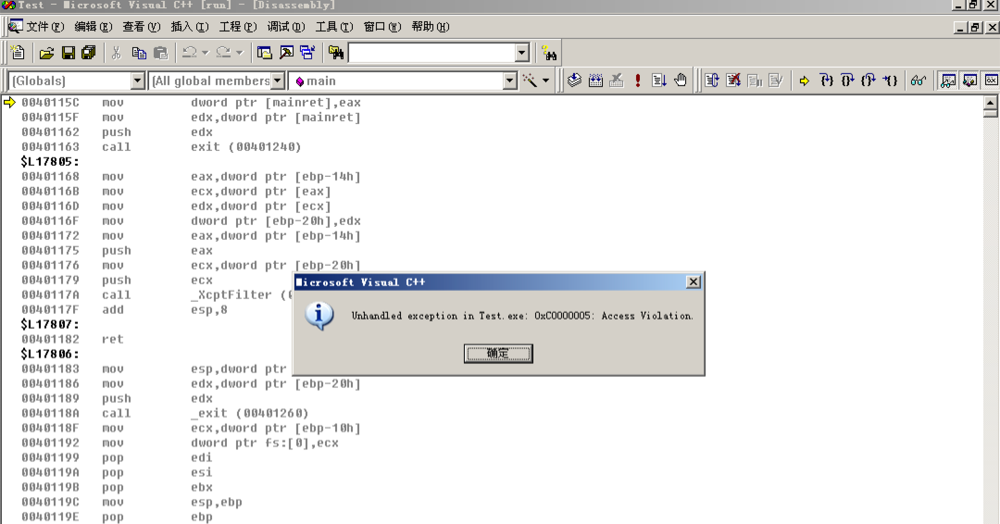
也就是说当我们使用越界读取时会去读取一个不存在的未知地址。
课外：缓冲区溢出
#include <stdio.h>void Fun(){ while(1) { printf("why?\n"); }}int main(){ int arr[8]; arr[9] = (int)&Fun; return 0;}如上代码中Fun函数为什么会被调用？我们可以通过反汇编代码+堆栈图来理解：
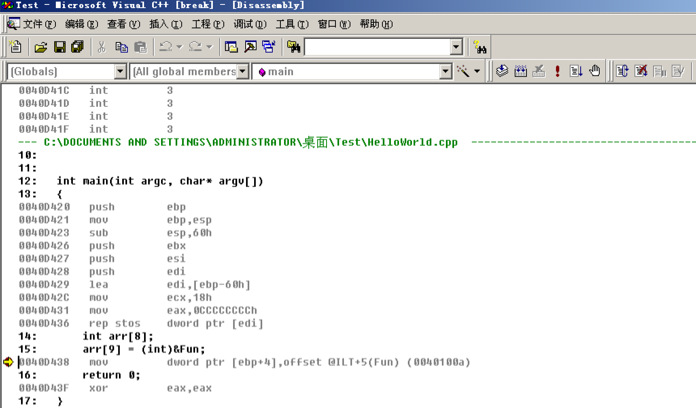
堆栈图如下：
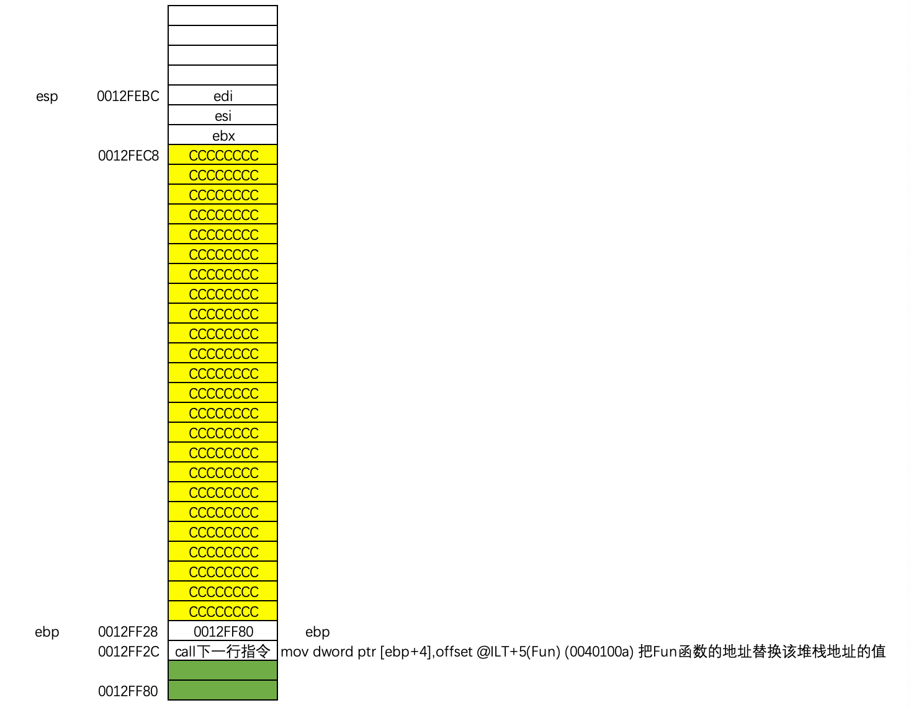
经过观察我们发现，这里的数组越界访问，造成了堆栈中返回地址被篡改为Fun函数的地址，一旦执行到ret指令后，程序将会跳转到Fun函数然后往下执行，也就进入了死循环输出。
多维数组
多维数组是什么？假设我们现在需要定义一个班级有2个组，每个组有2个人，数组可以这样定义：
int arr[4] = {1,2,3,4};int arr1[2*2] = {1,2,3,4};int arr2[2][2] = {{1,2},{3,4}};一共有三种方式，最后一种的表示我们就称之为多维数组，我们之前所学的数组我们可以称之为一维数组；为什么会使用到多维数组？
如上图代码所示，我们想要知道第二组的第二个人，可以这样调用：
arr[3];arr1[3]arr2[1][1];可以很明显的看见，当我们使用一维数组去调用的时候要通过计算的方法去思考，但是使用多维数组（这里有两个方括号所以称之为二维数组）我们完全没有这种烦恼，可以很方便的去调用。
那么以上所示的多维数组在内存中的分布是怎么样的呢？我们可以通过反汇编来看一下：

如上图所示我们可以清晰的看见多维数组在内存中的分布是怎么样的，跟一维数组存储一点区别都没有。
所以也可以得出一个结论就是int arr[2*2];等价于int arr[2][2];
多维数组的读写也很容易理解，举例说明一年有12个月，每个月都有一个平均气温，存储5年的数据：
int arr[5][12] = { {1,2,1,4,5,6,7,8,9,1,2,3}, // 0 {1,2,1,4,5,6,7,8,9,1,2,3}, // 1 {1,2,1,4,5,6,7,8,9,1,2,3}, // 2 {1,2,1,4,5,6,7,8,9,1,2,3}, // 3 {1,2,1,4,5,6,7,8,9,1,2,3} // 4};读取第一年五月份的数据，修改第二年三月份的数据，可以这样来操作：
arr[0][4];arr[1][2] = 10;编译器是如何找到对应数据的呢？第一年五月份的数据 → arr[0*12+4];
结构体
思考一下：
当需要一个容器能够存储1个字节，你会怎么做？使用char。
当需要一个容器能够存储4个字节，你会怎么做？ 使用int。
当需要一个容器能够存储100个2个字节的数据，你会怎么做？ 使用short arr[100]。
当需要一个容器能够存储5个数据，这5个数据中有1字节的，2字节的有10字节的...你会怎么做？
这时候我们就要学习一个新的概念叫做：结构体；结构体的定义如下：
struct 类型名{ // 可以定义多种类型 int a; char b; short c;};那么结构体的特点是什么呢？
char/int/数组 等类型是编译器已知类型，我们称之为内置类型；但结构体编译器并不认识，当我们使用的时候需要告诉编译器一声，我们也称之为自定义类型；
如上代码所示我们仅仅是告诉编译器，我们定义的类型是什么样的，这段代码本身并不会占用内存空间；
结构体声明的位置和变量一样，都存在全局和局部的属性；
结构体在定义的时候，除了本身以外可以使用任何类型。
结构体类型变量的定义：
struct stStudent{ int stucode; char stuName[20]; int stuAge; char stuSex;};stStudent student = {101,"张三",18,'M'};结构体类型变量的读写：
struct stPoint{ int x; int y;};stPoint point = {10,20};int x;int y;// readx = point.x;y = point.y;// writepoint.x = 100;point.y = 200;定义结构体类型的时候，直接定义变量：
struct stPoint{ int x; int y;}point1,point2,point3;point1.x = 1;point1.y = 2;point2.x = 3;point2.y = 4;point3.x = 5;point3.y = 6;如上代码所示，定义结构体时是分配内存的，因为不仅定义了新的类型，还定义了三个变量。
动手思考一下，如下代码是否可行？
struct stPoint{ int x; int y;};stPoint point = {10,20};stPoint point2 = {11,20};point = point2;简单看下反汇编，我们发现是可以的，因为这里结构体类型都是一样的，类型一样，自然可以赋值：
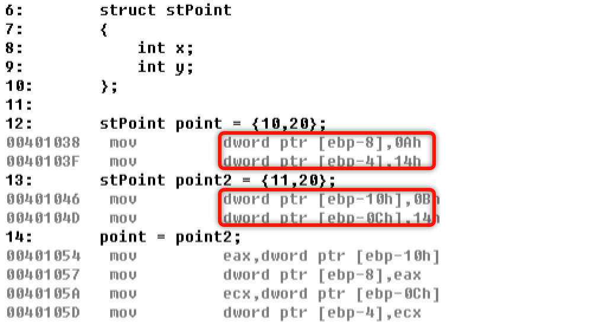
字节对齐
之前我们学习过本机宽度的概念，在32位操作系统中，当我们定义变量时，当其数据宽度小于4字节时，在编译的时候还是会以4字节的方式去存储，这是一种用空间换时间的策略，那么除了本机宽度，还有字节对齐也属于这一策略。
我们先使用一段代码来测试一下：
char x;int y;int main(){ x = 1; y = 2; return 0;}如上x、y两个全局变量，char类型数据宽度是一个字节，所以假设其内存地址是0x0，那么全局变量y的内存地址是0x1，这是我们的猜想，但实际并不是这样，通过反汇编来看一下：
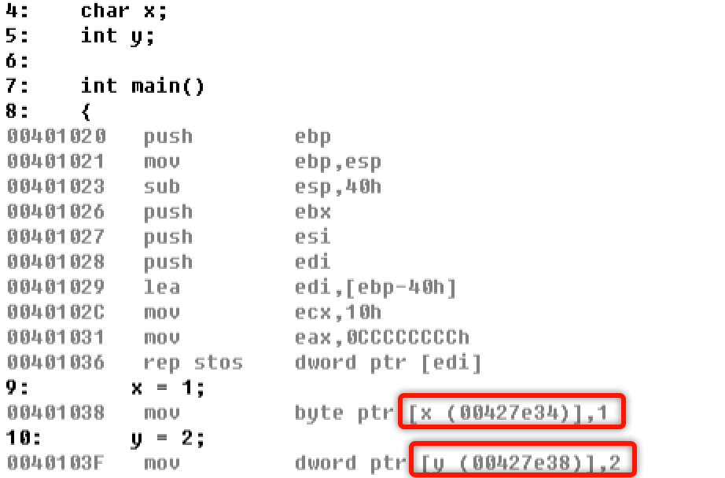
可以清晰的看见，这里的地址并不是连续的，35、36、37这三个字节是被浪费掉了，这是为什么呢？这就是我们所谓的字节对齐；细心的人会发现这里的地址实际上就是数据宽度的整数倍，例如0x38是十进制4的整数倍。
字节对齐就是：一个变量占用N个字节，则该变量的起始地址必须是N的整数倍，即：起始地址 % N = 0；如果是结构体，那么结构体的起始地址则是其最宽的数据类型成员的整数倍；这种方式可以提升程序编译的效率。
例如如下代码：
struct Test { int a; char b;};则该结构体的起始地址则是4的整数倍，因为其最宽的数据类型成员是a（int类型）。
当我们想要打印一个变量、结构体等等的数据宽度该怎么办？这里我们需要使用到一个关键词sizeof，其使用方法如下：

我们可以以上面所示的结构体代码举例，来打印一下看看：
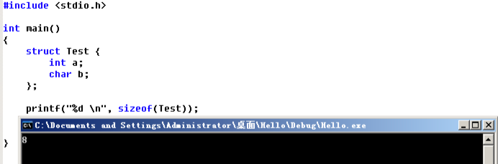
结构是8，所以也印证了，我们说的结构体也是需要字节对齐的。
之前我们说了这种方式是空间换时间的策略，但是在一些场景下，我们可用的空间有限，这种空间浪费可能无法满足或者我们无法接受这种浪费，这种情况下我们可以使用如下的方式来改变这种对齐方式：
#pragma pack(1)struct Test{ char a; int b;};#pragma pack()如上代码是通过#pragma pack(1)来改变结构体成员的对齐方式，但是无法影响结构体本身。
#pragma pack(n)中的n用来设定变量以n字节对齐方式，可以设定的值包含：1、2、4、8，VC6编译器默认是8；所以我们可以使用如上这种方式来取消强制对齐。
我们来看一下这个结构体最终的宽度是多少：
#pragma pack(2)struct Test{ char a; int b; char c;};#pragma pack()它的内存分配是这样的：

因为我们强制要求了以2字节的方式进行对齐，所以char类型虽然只占了一个字节，却需要分配2个地址，而结构体的宽度等于 最 小值(对齐参数, 最大数据宽度)的倍数。
结构体数组
结构体和int、char等本质是没有区别的，所以结构体也有数组，结构体数组的定义如下：
类型 变量名[常量表达式];// 定义结构体类型struct stStudent{ int Age; int Level;};// 定义结构体变量struct stStudent st;// 定义结构体数组struct stStudent arr[10]; 或者 stStudent arr[10];结构体数组初始化：
struct stStudent { int Age; int Level;};stStudent arr[5] = {{0,0}, {1,1}, {2,2}, {3,3}, {4,4}};arr[0].Age = 100;arr[0].Level = 100;结构体成员的使用：
// 结构体数组名[下标].成员名arr[0].Age = 10;int age = arr[0].Age;字符串成员的处理：
struct stStudent{ int Age; char Name[0x20];};struct stStudent arr[3] = {{0,"张三"},{1,"李四"},{2,"王五"}};// 读char buffer[0x20];strcpy(buffer,arr[0].Name);// 写strcpy(arr[0].Name,"王钢蛋");strcpy是一个字符串处理函数，用于字符串拷贝，其参数是传入的是两个地址，就谁传给谁。
最后我们来看一下结构体数组的内存结构，如下代码：
struct stStudent{ int Age; char Name[0x20];};struct stStudent arr[3] = {{0,"张三"},{1,"李四"},{2,"王五"}};int x = arr[0].Age;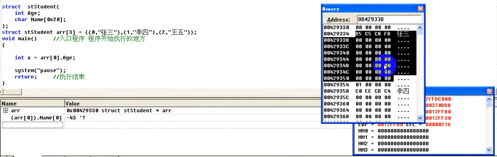
结构体 stStudent 的宽度为 8 + 32 = 40；我们观察到结构体数组在内存中是连续存储的。
指针类型
在C语言里面指针是一种数据类型，是给编译看的，也就是说指针与int、char、数组、结构体是平级的，都是一个类型。
带"*"号的变量我们称之为指针类型，例如：
char* x;short* y;int* a;float* b;...任何类型都可以带这个符号，格式就是：类型* 名称；星号可以是多个。
指针变量的赋值格式如下：
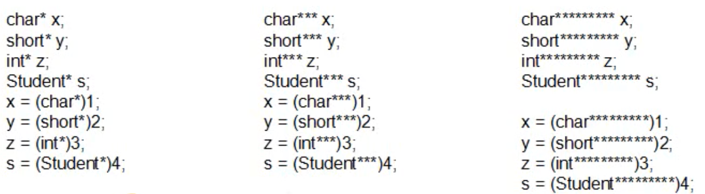
指针类型的变量宽度永远是4字节，无论类型是什么，无论有几个星号。
指针类型和其他数据类型是一样的，也可以做自增、自减，但与其他数据类型不一样的是，指针类型自增、自减是加、减去掉一个星号后的宽度。
如下代码：
#include <stdio.h>int main(){ int** a; char** b; a = (int**)1; b = (char**)2; a++; b++; printf("%d %d \n", a, b); return 0;}第一次自增，a+4 = 5，b+4 = 6，因为减去一个星号还是指针，指针的宽度永远是4：

自减同理可得，那么我们知道了自增、自减就可以知道指针类型的加减运算规律：
因为自增、自减，本质上就是+1，所以我们可以得出算式：
指针类型变量 + N = 指针类型变量 + N * (去掉一个*后类型的宽度)
指针类型变量 - N = 指针类型变量 - N * (去掉一个*后类型的宽度)
但需要注意，指针类型无法做乘除运算。
最后：指针类型是可以做比较的。
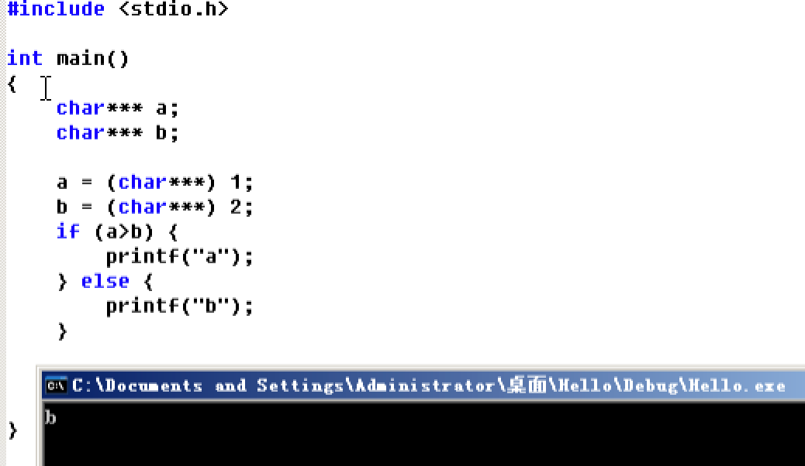
&的使用
&符号是取地址符，任何变量都可以使用&来获取地址，但不能用在常量上。
如下代码：
#include <stdio.h>struct Point { int x; int y;};char a;short b;int c;Point p;int main(){ printf("%x %x %x %x \n", &a, &b, &c, &p); return 0;}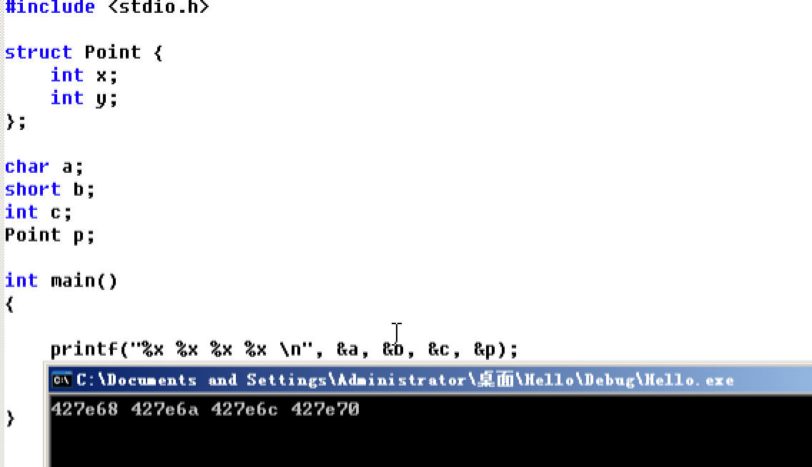
在这里使用取地址符可以直接获取每个变量、结构体的地址，但是这种格式可能跟我们之前看到的8位不一样，前面少了2个0，这时候可以将%x占位符替换为%p来打印显示。
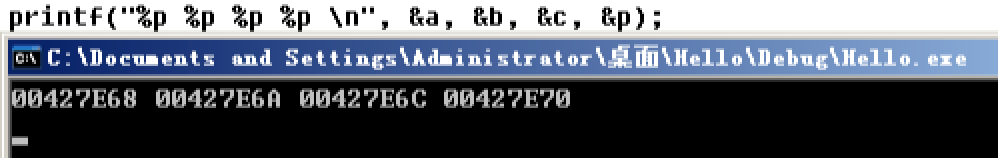
那么取地址符（&变量）的类型是什么呢？我们可以来探测下：
char a;short* b;int** c;int x = &a;int x = &b;int x = &c;以上代码我们在编译的时候是没法成功的，它的报错内容是：
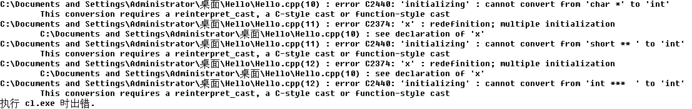
通过报错内容我们可以看出类型不同无法转换，但是我仔细观察报错内容：char*无法转换成int，short**无法转换成int...那么就说明了一点，在我们使用取地址符时，变量会在其原本的数据类型后加一个星号。
可以这样进行指针赋值：
char x;char* p1;char** p2;char*** p3;char**** p4;p1 = &x; // &x -> char*p2 = &p1;p3 = &p2;p4 = &p3;p1 = (char*)p4;取值运算符
取值运算符就是我们之前所了解的“*”星号，“*”星号有这几个用途：
乘法运算符（1*2）
定义新的类型（char*）
取值运算符（星号+指针类型的变量）；也就是取地址的存储的值。
如下代码就是使用取值运算符：
int* a = (int*)1;printf("%x \n", *a);这段代码可以编译，但是是无法运行的，我们可以运行一下然后来看看反汇编代码：


如上反汇编代码，我们可以清楚的看见首先0x1给了局部变量（ebp-4），之后这个局部变量（ebp-4）给了eax，而后eax又作为了内存地址去寻找对应存储的值，但是这里eax为0x1，所以在内存中根本就不存在这个地址，也就没办法找到对应的值，自然就无法运行。
那么取值运算符（星号+指针类型）是什么类型呢？我们来探测下：
int*** a;int**** b;int***** c;int* d;int x = *(a);int x = *(b);int x = *(c);int x = *(d);以上代码我们在编译的时候是没法成功的，它的报错内容是：
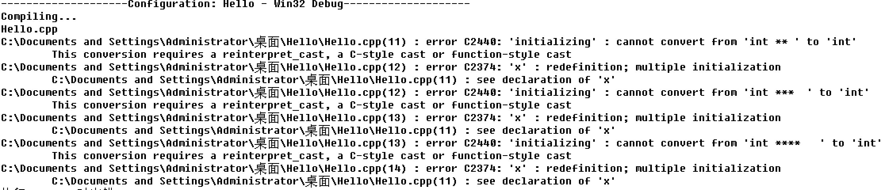
通过报错内容我们可以看出类型不同无法转换，但是我仔细观察报错内容：int**无法转换成int，int***无法转换成int...那么就说明了一点，在我们使用取值运算符时，变量会在其原本的数据类型后减去一个星号。
取值运算符举例：
int x = 1;int* p = &x;int** p2 = &p;*(p) = 2;int*** p3 = &p2;int r = *(*(*(p3)));数组参数传递
之前我们学过几本类型的参数传递，如下代码所示：
#include <stdio.h>void plus(int p) { p = p + 1;}int main(){ int x = 1; plus(x); printf("%d \n", x); return 0;}如上代码变量x最终值是多少？相信很多人都知道答案了，是1，原封不动。

为什么是1？这是因为在变量x作为参数传入plus函数，是传入值而不是这个变量本身，所以并不会改变变量本身。
数组也是可以作为参数传递，我们想要传入一个数组，然后打印数组的值（定义数组参数时方括号中不要写入常量）：
#include <stdio.h>void printArray(int arr[], int aLength) { for (int i=0; i<aLength; i++) { printf("%d \n", arr[i]); }}int main(){ int arr[] = {0,1,2,3,4}; printArray(arr, 5); return 0;}我们想打印数组不仅要知道数组是什么，也要获取数组的长度，所以需要两个参数（实际上我们也有其他方法获取长度，这里先不多说）。

我们来看下反汇编代码，看看数组是否和基本类型一样传入的是值：
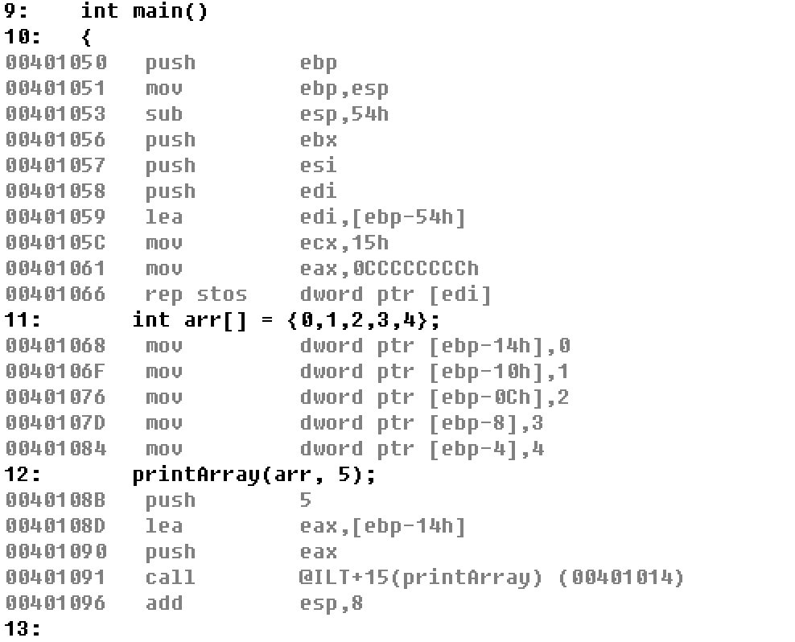
通过如上代码所示，我们可以很清晰的看见，ebp-14也就是数组的第一个值的地址给了eax，最后eax压入堆栈，也就是传递给了函数。
所以我们得出结论：数组参数传递时，传入的是数组第一个值的地址，而不是值；换而言之，我们在printArray函数中修改传入的数组，也就修改了数组本身。
我们再换个思路，在数组作为参数传递的时候，可以换一种形式，直接传入地址也是可以打印的，也就是使用指针来操作数组：
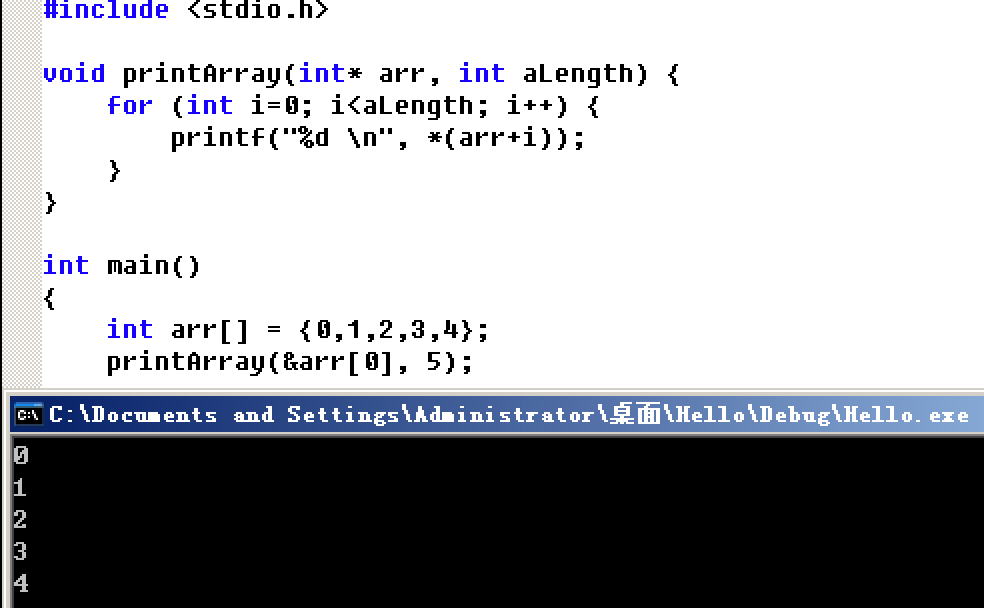
事实证明这是可行的，我们在传入参数的时候使用数组第一个值的地址即可。
指针与字符串
在学习完指针类型后，我们可以来了解一下这些函数：
int strlen(char* s); // 返回类型是字符串s的长度，不包含结束符号\0char* strcpy(char* dest, char* src); // 复制字符串src到dest中，返回指针为dest的值char* strcat(char* dest, char* src); // 将字符串src添加到dest尾部，返回指针为dest的值int strcmp(char* s1, char* s2); // 比较s1和s2，一样则返回0，不一样返回非0字符串的几种表现形式：
char str[6] = {'A','B','C','D','E','F'};char str[] = "ABCDE";char* str = "ABCDE";指针函数（本质就是函数，只不过函数的返回类型是某一类型的指针）：
char* strcpy(char* dest, char* src);char* strcat(char* dest, char* src);指针取值的两种方式
如下图所示的则是一级指针（一个星号）和多级指针（多个星号）：

这段代码看着很复杂，但我们有基础后再看它轻而易举，脑子里浮现的就是汇编代码。
指针取值有两种方式，如下代码：
#include <stdio.h>int main(){ int* p = (int*)1; printf("%d %d", *(p), p[0]); return 0;}我们可以使用取值运算符，也可以使用数组的方式，因为其本质都是一样的，我们来看下反汇编代码：

也就说明：*()与[]的互换，如下是互换的一些例子：
int* p = (int*)1;printf("%d %d \n",p[0],*p); //p[0] = *(p+0) = *p int** p = (int**)1;printf("%d %d \n",p[0][0],**p); printf("%d %d \n",p[1][2],*(*(p+1)+2));int*** p = (int***)1;printf("%d %d \n",p[1][2][3],*(*(*(p+1)+2)+3)); /**(*(*(*(*(*(*(p7))))))))= *(*(*(*(*(*(p7+0)+0)+0)+0)+0)+0)= p7[0][0][0][0][0][0][0]*/总结：
*(p+i) = p[i] *(*(p+i)+k) = p[i][k] *(*(*(p+i)+k)+m) = p[i][k][m] *(*(*(*(*(p+i)+k)+m)+w)+t) = p[i][k][m][w][t] 结构体指针
我们来了解一下结构体指针，如下代码：
#include <stdio.h>struct Point { int a; int b;};int main(){ Point p; Point* px = &p; printf("%d \n", sizeof(px)); return 0;}我们打印结构体指针的宽度，最终结果是4，这时候我们需要知道不论你是什么类型的指针，其特性就是我们之前说的指针的特性，并不会改变。
如下代码就是使用结构体指针：
// 创建结构体Point p;p.x=10;p.y=20;// 声明结构体指针Point* ps;// 为结构体指针赋值ps = &p;// 通过指针读取数据printf("%d \n",ps->x);// 通过指针修改数据ps->y=100;printf("%d\n",ps->y);提问：结构体指针一定要指向结构体吗？如下代码就是最好的解释：
#include <stdio.h>struct Point{ int x; int y;};int main(){ int arr[10] = {1,2,3,4,5,6,7,8,9,10}; Point* p = (Point*)arr; int x = p->x; int y = p->y; printf("%d %d \n", x, y); return 0;}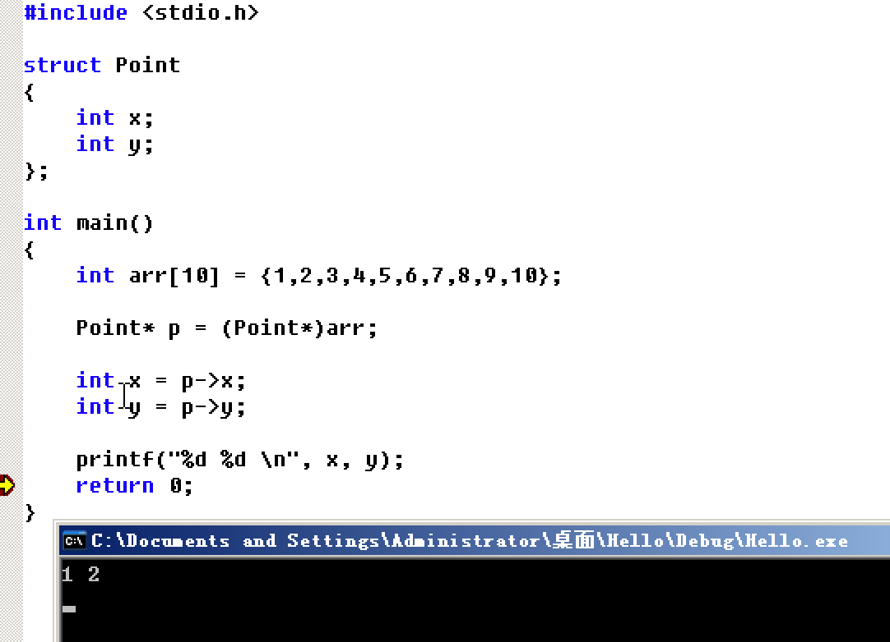
指针数组与数组指针
指针数组和数组指针，这两个是完全不一样的东西，指针数组的定义：
char* arr[10];Point* arr[10];int********** arr[10];指针数组的赋值方式：
char* a = "Hello";char* b = "World";// onechar* arr[2] = {a, b};// twochar* arr1[2];arr1[0] = a;arr1[1] = b;// threechar* arr2[2] = {"Hello", "World"};一共有三种赋值方式，在实际应用中我们更偏向于第三种方式。
结构体指针也有数组，我们可以看下其定义和对应宽度：

接下来我们要学习的是数组指针，数组指针在实际应用很少用到，数组指针是最难学的。
首先分析一下如下代码：
int arr[] = {1, 2, 3, 4, 5, 6, 7, 8, 9, 0};int* p = &arr[0];int* p = arr; // &arr[0] int* p = (int *)&arr; // &arr -> int *[10]&arr就是我们要学的数组指针，也就是int *[10]，数组指针的定义如下：
int(*px)[5]; // 一维数组指针char(*px)[3];int(*px)[2][2]; // 二维数组指针char(*px)[3][3][3]; // 三维数组指针px就是我们随便定义的名字，本质上就是指针，那么也就有着指针的特性，无论是长度还是加减法...
思考：int *p[5] 与 int(*p)[5]有什么区别？我们可以来看看宽度：
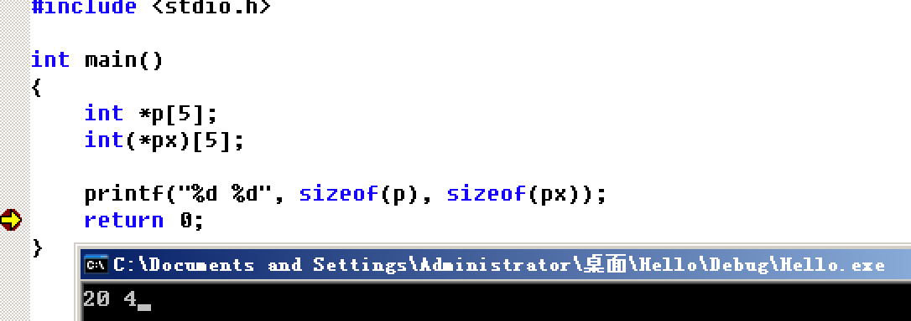
可以看见一个是20，一个是4；一个是指针变量的数组，一个是数组指针，本质是不一样的。
数组指针的宽度和赋值：
int(*px1)p[5];char(*px2)[3]; int(*px3)[2][2];char(*px4)[3][3][3];printf("%d %d %d %d\n",sizeof(px1),sizeof(px2),sizeof(px3),sizeof(px4));// 4 4 4 4 px1 = (int (*)[5])1;px2 = (char (*)[3])2;px3 = (int (*)[2][2])3;px4 = (char (*)[3][3][3])4;数组指针的运算：
int(*px1)p[5];char(*px2)[3]; int(*px3)[2][2];char(*px4)[3][3][3];px1 = (int (*)[5])1;px2 = (char (*)[3])1;px3 = (int (*)[2][2])1;px4 = (char (*)[3][3][3])1;px1++; //int(4) *5 +20 =21px2++; //char(1) *3 +3 =4px3++; //int(4) *2 *2 +16 =17px4++; //char(1) *3 *3 *3 +9 =10printf("%d %d %d %d \n",px1,px2,px3,px4);数组指针的使用：
// 第一种：int arr[] = {1,2,3,4,5,6,7,8,9,0};int(*px)[10] = &arr;// *px 是啥类型？ int[10] 数组类型// px[0] 等价于 *px 所以 *px 也等于 int[10]数组printf("%d %d \n",(*px)[0],px[0][0]);px++; // 后 (*px)[0]就访问整个数组地址后的地址内的数据// 第二种：int arr[3][3] = { {1,2,3}, {4,5,6}, {7,8,9}};// 此时的 px指针 指向的 {1,2,3}这个数组的首地址int(*px)[3] = &arr[0];// *px -> 此时就是数组{1,2,3}本身// 越过第一个数组 此时px指针指向 {4，5，6}的首地址px++;printf("%d %d \n",(*px)[0],px[0][0]);// 这里打印的就是 4 4思考：二维数组指针可以访问一维数组吗？
int arr[] = {1,2,3,4,5,6,7,8,9,0};int(*px)[2][2] = (int(*)[2][2])arr;是可以的，因为*px实际上就是int[2][2]，我们之前学过多维数组，int[2][2]也就等于int[4]，所以{1,2,3,4}就给了int[2][2]，也就是{{1,2}, {3,4}}，所以(*px)[1][1]为4。
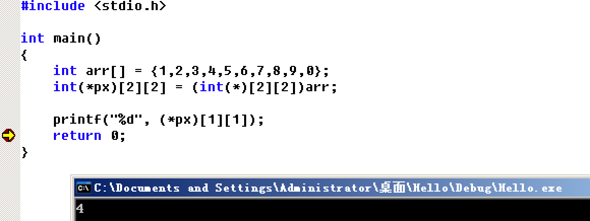
调用约定
函数调用约定就是告诉编译器怎么传递参数，怎么传递返回值，怎么平衡堆栈。
常见的几种调用约定:
|
调用约定 |
参数压栈顺序 |
平衡堆栈 |
|
__cdecl |
从右至左入栈 |
调用者清理栈 |
|
__stdcall |
从右至左入栈 |
自身清理堆栈 |
|
__fastcall |
ECX/EDX 传送前两个，剩下：从右至左入栈 |
自身清理堆栈 |
一般情况下自带库默认使用 __stdcall，我们写的代码默认使用 __cdecl，更换调用约定就是在函数名称前面加上关键词：
int __stdcall method(int x,int y){ return x+y;}method(1,2);函数指针
函数指针变量定义的格式：
// 返回类型 (调用约定 *变量名)(参数列表);int (__cdecl *pFun)(int,int);函数指针类型变量的赋值与使用：
// 定义函数指针变量int (__cdecl *pFun)(int,int);// 为函数指针变量赋值pFun = (int (__cdecl *)(int,int))10;// 使用函数指针变量int r = pFun(1,2);我们来看下函数指针的反汇编代码：
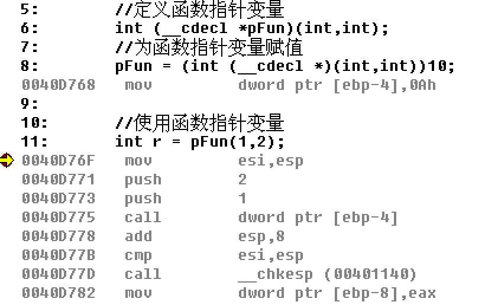
可以很清晰的看见函数指针生成来一堆汇编代码，传参、调用、以及如何平衡堆栈；而如上这段代码最终会调用地址0xA，但它本身不存在，所以无法运行。
所以我们想要调用某个函数时可以将地址赋值给pFun即可，并且在定义时写好对应的参数列表即可；也就是说函数指针通常用来使用别人写好的函数。
我们也通过函数指针绕过调试器断点，假设有攻击者要破解你的程序，它在MessageBox下断点，你正常的代码就会被成功断点，但是如果你使用函数指针的方式就可以绕过。
首先，我们先写一段正常的MessageBox程序，然后使用DTDebug来下断点：
可以看见，我们下断点成功断下来了，断点本质上就是在MOV EDI, EDI所在那行的地址下断点，那么我们可以直接跳过这行调用调用下一行，实际上这段汇编的核心在于我标记的部分，准确一点的说就是CALL指令哪一行，我们可以右键Follo跟进：
我们可以从0x77D5057D开始执行，通过汇编代码可以知道这个函数需要5个参数，并且最后的RETN则表示内平栈则使用__stdcall，所以我们函数指针（操作系统API返回通常是4字节）可以这样写：
#include <windows.h>int main(){ int (__stdcall *pFun)(int,int,int,int,int); pFun = (int (__stdcall *)(int,int,int,int,int))0x77D5057D; MessageBox(0,0,0,0); pFun(0,0,0,0,0); return 0;}这样就可以绕过断点了：
预处理之宏定义、条件编译与文件包含
预处理一般是指在程序源代码被转换为二进制代码之前，由预处理器对程序源代码文本进行处理，处理后的结果再由编译器进一步编译。
预处理功能主要包括宏定义、文件包含、条件编译三部分。
宏定义
简单的宏：#define 标识符 字符序列
#define FALSE 0#define NAME "LUODAOYI"#define __IN#define __OUT极端例子：
#define NAME "LUODAOYI"#define A int method() {#define B char buffer[0x10];#define C strcpy(buffer,NAME);#define D return 0;}#define E method();// useABCDint main(){ E return 0;}带参数的宏：#define 标识符(参数表) 字符序列
#define MAX(A,B)((A)>(B)?(A):(B))int method(){ int x = 1; int y = 2; int z = MAX(x,y); return 0;}多行定义，'\' 后不可有空格
#define A for(int i=0;i<length;i++)\{\ printf("%d \n",arr[i]);\}\int method(int arr[],int length){ A return 0;}int main(){ int arr[] = {1,2,3,4,5,6,7,8,9,0}; method(arr,10);}直接使用宏定义函数
#define MYPRINT(X,Y) for(int i=0;i<(Y);i++)\{\ printf("%d \n",(X)[i]);\}\return 0;\int main(){ int arr[] = {1,2,3,4,5,6,7,8,9,0}; MYPRINT(arr,10);}使用宏定义函数和普通函数的区别：使用宏比较节省空间，因为使用宏定义函数，没有堆栈提升操作，也就是不会作为函数调用而是直接内联到代码内。
宏定义的注意事项
只做字符序列的替换工作，不做任何语法检测，在编译前处理
宏名标识符与左圆括号之前不允许有空白符，应紧接在一起
为了避免出错，宏定义中给形参加上括号
多行声明时，回车换行前要加上字符'\'，注意字符'\'后要紧跟回车键，中间不能有空格或其他字符
末尾不需要分号
条件编译与文件包含
条件编译，就是当满足条件时才会要求编译器进行编译；如下代码当if成立则变异printf，否则就不编译：
int main(){#if 0 printf("--------")#endif return 0;}应用场景：
#define DEBUG 0int main(){#if DEBUG printf("--------")#endif return 0;}可以通过反汇编代码来看一下：

可以看见printf根本没有进行编译。
if define之类的，我们都称之为预处理指令，如下是常用的。
预处理指令：条件编译是通过预处理指令实现的
|
指令 |
用途 |
|
#define |
定义宏 |
|
#undef |
取消已定义的宏 |
|
#if |
如果给定条件为真，则编译下面代码 |
|
#endif |
如果前面的#if给定条件不为真，当前条件为真，则编译下面代码 |
|
#else |
同else |
|
#endif |
结束一个#if…#else条件编译块 |
|
#ifdef |
如果宏已经定义，则编译下面代码 |
|
#ifndef |
如果宏没有定义，则编译下面代码 |
|
#include |
包含文件 |
文件包含
文件包含有两种格式，分别是 #include "file" 和 #include <file>
使用双引号：系统首先到当前目录下查找被包含的文件，如果没找到，再到系统指定的包含文件目录(由用户在配置环境时设置)去找
使用尖括号：直接到系统指定的包含文件目录去查找
所以系统文件用 <> 尖括号，自己定义的文件用 "" 双引号。
文件包含可能会存在重复包含的情况，我们可以使用条件编译、前置声明的方式避免。